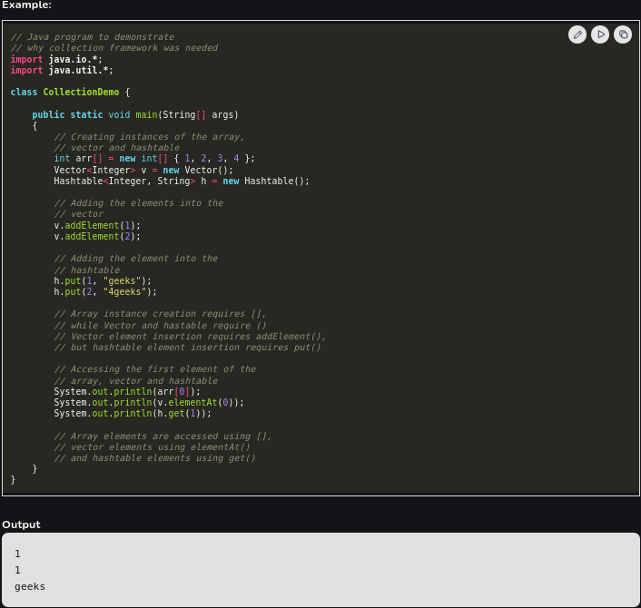

A framework is a set of classes and interfaces which provide a ready-made architecture. In order to implement a new feature or a class, there is no need to define a framework. However, an optimal object-oriented design always includes a framework with a collection of classes such that all the classes perform the same kind of task.
Before the Collection Framework(or before JDK 1.2) was introduced, the standard methods for grouping Java objects (or collections) were Arrays or Vectors, or Hashtables. All of these collections had no common interface. Therefore, though the main aim of all the collections is the same, the implementation of all these collections was defined independently and had no correlation among them. And also, it is very difficult for the users to remember all the different methods, syntax, and constructors present in every collection class. Let’s understand this with an example of adding an element in a hashtable and a vector.
